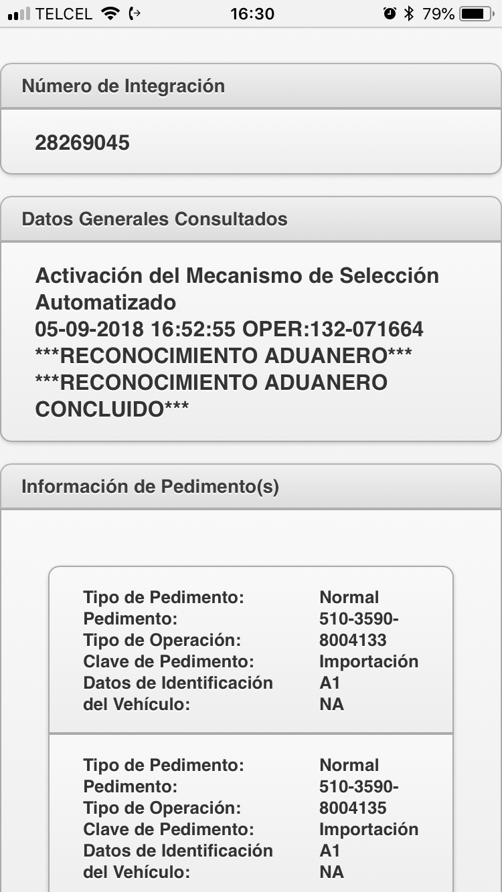

Recomendaciónes
- Favor de poner sus celulares en silencio
- Poner atencion
- Si necesitas salir favor de hacerlo en silencio
- Favor de anotar todas sus dudas la resolveremos al final
Antecedentes y Plataforma MATCE
Modelo de Administración Tributaria de Comercio Exterior
- Es tanto el software como el modelo de análisis de riesgos que se observará en aduanas
- Implica revisión de aspectos de seguridad nacional y administrativos y fiscales
- La meta son las aduanas “paperless” y “Humanless”
Situación actual
Actualmente MATCE Fase I (Selección Automatizada) se encuentra operando a nivel nacional, brindando facilidad en el manejo de la herramienta al contar con una interfaz amigable y mejora de procesos en la operación.
Se encuentra en proceso de generalizar el uso del documento DODA-QR, con lo que se espera que la operación sea aún mas ágil y a futuro se habilite el despacho sin papel.
Beneficios Generales
- Facilidad en el manejo de la herramienta al contar con una interfaz amigable.
- integridad y seguridad de la información al basarse el desarrollo en los lineamientos de seguridad de la AGCTI.
- Unificación de criterios operativos y mejora de procesos al transformar procesos manuales en procesos automatizados (asignación de andenes)
- Uso de solo una plataforma de desarrollo y base de datos, facilitando la comunicación entre los diversos proceso del despacho aduanero.
Estrategia de la reingeniería del SAAI
El MATCE reemplazará las funcionalidades del SAAI y sus aplicativos periféricos de forma iterativa, los cuales soportan la operación del Despacho Aduanero, considerando:
- Una plataforma moderna, integral y escalable
- Un solo repositorio de información
- Unificación de criterios operativos
- Seguridad de la información
- Reingeniería de procesos, entre otros

Implicaciones para el Agente Aduanal
¿Cuándo surge el DODA?
Publicación de la Segunda Resolución de Modificaciones a las Reglas Generales deComercio Exterior para 2016, específicamente de la reglas 3.1.16 y 3.1.32.
19 de Octubre 2016 en DOF
¿QUE ES EL DODA QR?
Documento de Operación para Despacho Aduanero
Esquema de despacho de mercancías sin que sea necesaria la presentación de las impresiones de pedimentos, avisos o copias simples, el cual podrá llevarse a cabo por medio del formato denominado: Documento de Operación para Despacho Aduanero DODA.
Reglamento
Artículo 64 RLA. Cuando en términos de la Ley, se deba presentar ante las Autoridades Aduaneras una impresión del Pedimento, del Aviso Consolidado o de algún otro documento para el despacho aduanero de las Mercancías y la activación del Mecanismo de Selección Automatizado, se dará por cumplida dicha obligación cuando la Autoridad Aduanera valide que la información electrónica de la operación se transmitió y se cumplió con lo señalado en el artículo 35 de la Ley, sin que se tenga que presentar la impresión respectiva.¿Qué contiene el DODA?

- Código de barras bidimensional QR
- Firma electrónica del agente aduanal, apoderado o representante legal.
- Sello digital del SAT
RGCE 3.1.31 Para los efectos de los artículos 36, primer párrafo, 36-A, penúltimo párrafo, 37-A, fracción II, 43 de la Ley y 64 del Reglamento, la activación del mecanismo de selección automatizado para el despacho de las mercancías, se efectuará sin que se requiera presentar el formato de “Relación de documentos”, la impresión del "Pedimento", el "Formato para la Impresión Simplificada del Pedimento", la impresión del "Aviso consolidado", el Pedimento Parte II o copia simple a que se refiere la regla 3.1.18., cumpliendo con lo siguiente:
I. Transmita al SEA el documento electrónico que señale los siguientes datos:
- Número de pedimento, tipo de operación, clave de la aduana, sección aduanera de despacho, patente o autorización del agente aduanal, apoderado aduanal o representante legal acreditado, según corresponda.
- Los señalados en el Anexo 22, Apéndice 17, conforme a la operación de que se trate.
- Número económico de la caja o contenedor y placas.
- El CAAT de conformidad con la regla 2.4.4.
- Los demás que se señalen en los “Lineamientos con las especificaciones tecnológicas para realizar el despacho aduanero de mercancías con el Documento de Operación para el Despacho Aduanero” emitidos por la AGA, mismos que se podrán consultar en el Portal del SAT.
- Cantidad de la mercancía en unidad de medida de comercialización que se despacha.
Hay dos formas de generar el DODA
 Web Service
Web Service
La transmisión se realizará mediante la captura de los datos declarados por el representante legal acreditado, el agente aduanal o apoderado aduanal en el Portal del SAT, en la cual se obtendrá como medio de control, el formato “Documento de operación para despacho aduanero”, con el código de barras bidimensional QR (Quick Response Code).
Asimismo, se podrá realizar la transmisión del documento electrónico mediante un archivo con el formato y requisitos señalados en los “Lineamientos con las especificaciones tecnológicas para realizar el despacho aduanero de mercancías con el Documento de Operación para el Despacho Aduanero” emitidos por la AGA, mismos que se podrán consultar en el Portal del SAT, en este caso el representante legal acreditado, agente aduanal o apoderado aduanal, que realizarán el despacho aduanero de las mercancías, deberá generar el formato “Documento de operación para despacho aduanero”, en el cual se asentará el código de barras bidimensional QR (Quick Response Code).
II. Tratándose de consolidación de carga a que se refiere el artículo 42 del Reglamento, la información de los pedimentos que integran la operación, deberán enviarse en una sola transmisión, por lo que el sistema generará un solo formato, el cual se presentará ante el mecanismo de selección automatizado para su modulación.
III. En el caso de las operaciones previstas en la regla 3.1.18., por cada embarque se deberá realizar una transmisión, por lo que, en todos los embarques, incluido el transportado por el primer vehículo, furgón o carro tanque, deberá presentarse con el “Documento de operación para despacho aduanero”, ante el mecanismo de selección automatizado para su modulación y se sujetará a las disposiciones aplicables a la operación de que se trate.
Para efectos de la presente regla, se presentará a la aduana de despacho el formato “Documento de operación para despacho aduanero”, con el código de barras bidimensional QR (Quick Response Code), con las mercancías y se activará el mecanismo de selección automatizado, por lo que siempre que se presente el citado documento no será necesario presentar el formato de “Relación de documentos”, impresión de "Pedimento", el "Formato para la Impresión Simplificada del Pedimento", la impresión del "Aviso consolidado", el Pedimento Parte II o la copia simple a que se refiere la regla 3.1.18.
En el caso de importaciones, para amparar el traslado de las mercancías desde su ingreso a territorio nacional hasta su llegada al punto de destino, será necesario acompañar el embarque con el formato de “Documento de operación para despacho aduanero”.
Lo dispuesto en la presente regla, se podrá realizar en la medida en que se habiliten paulatinamente los sistemas informáticos en cada aduana del país, los cuales el SAT dará a conocer a través del Portal del SAT.
Generación del DODA
Portal

¿QUÉ INFORMACIÓN SE DEBE TRANSMITIR PARA GENERAR EL DODA?

Se deberá realizar la transmisión de la información señalada en la regla 3.1.31:
- Número de pedimento, tipo de operación, clave de la aduana y sección aduanera de despacho, patente o autorización de quien realice el despacho aduanero.
- Los señalados en el Anexo 22, Apéndice 17, conforme a la operación de que se trate.
- Número económico de la caja o contenedor y placas.
- El CAAT de conformidad con la regla 2.4.4
- Los demás que señalen en los lineamientos que se emitan y que se darán a conocer en la página electrónica del SAT
- Cantidad de la mercancía en unidad de medida de comercialización que se despacha.
Una vez que los agentes y apoderados aduanales así como los representantes legales acreditados hayan generado documentos de operación para despacho aduanero DODA, por medio del portal del SAT o por medio de web service indistintamente podrán realizar la consulta de los mismos en el portal de tramites y servicios de servicios al contribuyente.
Elementos necesarios para generar un DODA
La figura aduanal autorizada deberá contar con:
- Patente o autorización vigente y activa.
- e-firma o bien con su sello digital y su correspondiente llave privada.
- Pedimento validado y pagado, cuando corresponda.
- En el caso de operaciones con aviso consolidado se deberá contar con el acuse de valor.

Web Service


BENEFICIOS
- Ya no hay documentos “originales” que se puedan perder
- Se consolidan varios formatos en uno solo
- Agilidad en la consolidación de carga
Administracón del DODA
Una vez que los agentes y apoderados aduanales así como los representantes legales acreditados hayan generado documentos de operación para despacho aduanero DODA, por medio del portal del SAT o por medio de web service, indistintamente podrán realizar la administración de los mismos en el portal de tramites y servicios de servicios al contribuyente.
Consulta en aplicación Móvil

Caso DODA QR no válido
Caso DODA QR Certificado

Cumplimiento en Aduana
RESULTADO DEL MECANISMO DE SELECCIÓN AUTOMATIZADO
RGCE 3.1.16. Para los efectos de los artículos 43 de la Ley y 64 del Reglamento, el módulo de selección automatizado imprimirá el resultado de la selección únicamente en el pedimento, en la impresión simplificada del pedimento o en la impresión del aviso consolidado.
Cuando no sea necesario presentar los documentos a que se refiere el párrafo anterior y se active el mecanismo de selección automatizado de manera electrónica, el resultado se generará de igual forma, por lo que, en estos casos, dicho resultado se podrá consultar con la lectura del código de barras bidimensional QR (Quick Response Code) y en el Portal del SAT


Control y Guarda del DODA
Los registros electrónicos prevalecen
RGCE 3.1.13. Para los efectos de la presente Resolución y del artículo 36 de la Ley, la información del pedimento que se transmita electrónicamente a la autoridad aduanera se considerará que es la información que ha sido declarada por el contribuyente.
Para efectos del artículo 59-A de la Ley, la información de la factura o del documento equivalente, que se transmita electrónicamente a la autoridad aduanera, se considerará que es la información que ha sido declarada por el contribuyente y el agente aduanal
Para efectos del artículo 36-A de la Ley y demás disposiciones aplicables, la información enviada en documento electrónico o digital, se considerará que es la información que ha sido declarada por el contribuyente o, en su caso, por el agente aduanal
Artículo 162 L.A. Obligaciones del AA
VII. Formar un archivo electrónico de cada uno de los pedimentos con la información transmitida y presentada en mensaje o documento electrónico o digital como parte de sus anexos conforme a los artículos 6o., 36 y 36-A de la presente Ley y demás disposiciones aplicables.
Adicionalmente, deberá conservar el original de la manifestación de valor a que se refiere el artículo 59, fracción III de esta Ley, así como copia del documento presentado por el importador a la Administración General de Aduanas que compruebe el encargo que se le hubiere conferido para realizar el despacho aduanero de las mercancías y si éste fue otorgado de forma electrónica deberá conservar el acuse correspondiente.
Con independencia de las demás obligaciones fiscales, el archivo electrónico deberá conservarse por los plazos establecidos en el Código Fiscal de la Federación.
Los archivos electrónicos que se generen en términos de esta fracción, deberán ser proporcionados a los clientes que les correspondan, sin cargo adicional, quienes tendrán la obligación de conservarlos en términos de lo establecido por el tercer párrafo del artículo 6o. de esta Ley.
PLAZO DE GUARDA DE DOCUMENTOS
ART. 67 CFF
- LAS FACULTADES DE LAS AUTORIDADES FISCALES PARA DETERMINAR LAS CONTRIBUCIONES O APROVECHAMIENTOS OMITIDOS Y SUS ACCESORIOS, ASI COMO PARA IMPONER SANCIONES POR INFRACCIONES A LAS DISPOSICIONES FISCALES, SE EXTINGUEN EN EL PLAZO DE CINCO AÑOS CONTADOS A PARTIR DEL DÍA SIGUIENTE A AQUEL EN QUE:
- SE PRESENTÓ O DEBIO HABERSE PRESENTADO DECLARACIÓN O AVISO QUE CORRESPONDA A UNA CONTRIBUCIÓN QUE NO SE CALCULE POR EJERCICIOS O A PARTIR DE QUE SE CAUSARON LAS CONTRIBUCIONES CUANDO NO EXISTA LA OBLIGACIÓN DE PAGARLAS MEDIANTE DECLARACIÓN.10 AÑOS.
Dudas y Preguntas